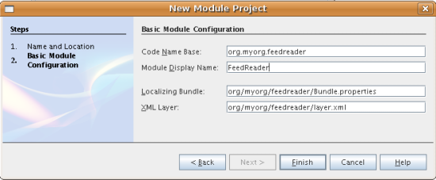
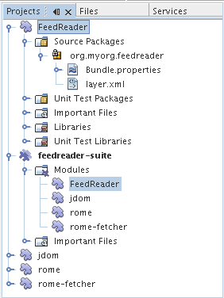
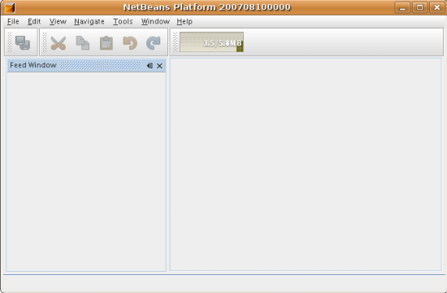
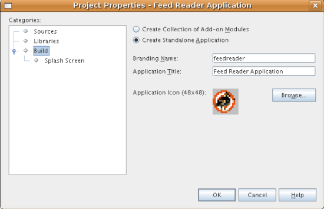

Apache NetBeans
Apache NetBeansLatest release
Руководство по созданию приложения для чтения каналов на платформе NetBeans
| This tutorial needs a review. You can open a JIRA issue, or edit it in GitHub following these contribution guidelines. |
- Необходимые предварительные знания
- Создание приложения
- Создание окна приложения для чтения каналов
- Выполнение приложения
- Добавление кода к приложению
- Определение зависимостей для приложения
- Установка зависимостей между модулями-обертками библиотек
- Создание папки "RssFeeds"
- Создание объекта канала
- Добавление окна "Feed Window"
- Создание класса "RssNode"
- Создание класса "RssFolderChildren"
- Создание класса "OneFeedNode"
- Создание класса "FeedChildren"
- Создание класса "EntryBeanNode"
- Создание пункта меню "Add Folder"
- Создание пункта меню "Add RSS"
- Локализация класса "RssNode"
- Выбор стиля для приложения
- Подготовка дистрибутива приложения
Добро пожаловать в руководство по разработке приложений для чтения каналов на платформе NetBeans. Приложение для чтения каналов, создаваемое в настоящем руководстве, является простейшим обозревателем каналов RSS/Atom, моделируемых после запуска подключаемого модуля Sage для Mozilla Firefox. Он представляет собой дерево каналов с подузлами, отражающими отдельные сообщения каналов, которые могут быть открыты в обозревателе.
Для иллюстрации конечного результата на рисунке показано приложение для чтения каналов, которое будет создано в этом руководстве, с сообщением из канала NetBeans Highlights:

Необходимые предварительные знания
Для работы с настоящим руководством не требуются знания в области разработки на платформе NetBeans. Опыт программирования на Java может быть полезен, но его наличие не является обязательным условием. Тем не менее, перед работой с руководством желательно ознакомиться со следующими документами, содержащими рекомендуемую базовую информацию:
-
Подготовка к созданию приложения для чтения каналов. Этот документ содержит базовую информацию, с которой рекомендуется ознакомиться перед началом работы с данным руководством. В нем представлены концептуальные основы всех операций, описываемых в руководстве. В этом документе также приведены указания по получению исходного кода примера, который будет разработан по мере изучения настоящего руководства.
-
Руководство по началу работы с платформой NetBeans. Это краткое руководство содержит описание всего процесса создания функционально насыщенного клиентского приложения на платформе NetBeans. В нем рассматриваются основные этапы и средства разработки, при помощи которых в руководстве создается редактор HTML.
Создание приложения
Создание приложения в среде IDE NetBeans начинается с создания большого количества файлов, используемых в качестве основы для приложения. Например, в среду IDE входит мастер проектов модулей, мастер проектов пакетов модулей и мастер модулей-оберток библиотек, применяемые для создания всех базовых файлов, необходимых для модулей и приложений, основанных на платформе NetBeans.
-
Проект пакета модулей. Проект, в рамках которого группируются проекты модулей и проекты модулей-оберток библиотек, зависящие друг от друга, которые могут развертываться совместно одним блоком.
-
Проект модуля-обертки библиотеки. Проект, устанавливающий путь к классам для архива JAR библиотеки и экспортирующий некоторые или все пакеты архива JAR из модуля в виде общедоступных пакетов.
-
Проект модуля. Проект, используемый для внедрения функциональных возможностей, бизнес-логики и интерфейса пользователя модуля или приложения на базе платформы NetBeans.
Создание проекта пакета модулей
-
Выберите (Ctrl-Shift-N). В области "Categories" выберите "NetBeans Modules". В области "Projects" выберите "Module Suite Project". Экран должен выглядеть следующим образом:

Нажмите кнопку "Next".
-
На экране "Name and Location" введите
feedreader-suiteв поле "Project Name". В поле "Project Location" укажите любой каталог на компьютере. Экран должен выглядеть следующим образом:

Нажмите кнопку "Finish".
В среде IDE создается проект feedreader-suite , который отображается в окне "Projects":

Этот проект будет содержать проект модуля и проекты модулей-оберток библиотек, которые будут созданы в следующих подразделах.
Обертывание библиотек
Все приложение для чтения каналов может быть выполнено как отдельный модуль. Однако этому приложению требуются библиотеки Rome, Rome Fetcher и JDom:
-
Rome. Используется для чтения каналов RSS и Atom при помощи очень простого интерфейса API.
-
Rome Fetcher. Позволяет получать каналы посредством HTTP.
-
JDom. Представляет собой интерфейс API для синтаксического анализа XML. Необходимость наличия этой библиотеки для приложения для чтения каналов обусловлена лишь тем, что она используется библиотекой Rome.
Позднее при необходимости расширить приложение для чтения каналов путем добавления большего числа модулей, которые могут использовать эти библиотеки, целесообразно установить их зависимость от модулей библиотек, а не от всего приложения для чтения каналов. Кроме того, библиотечные модули могут быть "автоматически загружаемыми", т.е. их загрузка будет осуществляться средой NetBeans только в случае необходимости. До этого момента ресурсы памяти на этапе выполнения расходоваться не будут.
-
Щелкните правой кнопкой мыши узел "Modules" в проекте пакета модулей в окне "Projects", как показано ниже, и выберите пункт "Add New Library":

После этого на экране должно отображаться следующее:

-
На экране "Select Library", показанном выше, найдите папку, в которую была загружена библиотека JDom, и затем выберите
jdom.jarиLICENSE.txt. Нажмите кнопку "Next".
-
На экране "Name and Location" примите все значения по умолчанию. Экран должен выглядеть следующим образом:

Модуль-обертка библиотеки будет сохранен в проекте пакета модулей. Он также может быть сохранен в другом месте, однако в целях управления версиями рекомендуется разместить его в проекте пакета модулей. Поэтому в раскрывающемся списке "Add to Module Suite" выбирается проект пакета модулей feedreader-suite .
|
Нажмите кнопку "Next".
-
На экране "Basic Module Configuration" примите все значения по умолчанию. Экран должен выглядеть следующим образом:

Нажмите кнопку "Finish".
Новый модуль-обертка библиотеки открывается в среде IDE и будет отображен в окне "Projects". Окно "Projects" должно выглядеть следующим образом:

-
Вернитесь к действию 1 этого раздела и создайте модуль-обертку для библиотеки Rome. Примите все значения по умолчанию.
-
Вернитесь к действию 1 этого раздела и создайте модуль-обертку для библиотеки Rome Fetcher. Примите все значения по умолчанию.
В этом разделе был создан проект пакета модулей с тремя модулями-обертками библиотек, содержащий большое количество удобных классов Java, которые могут использоваться по мере изучения руководства.
Создание проекта модуля
В этом разделе создается проект для реализации функциональных возможностей, которые должны предоставляться приложением. В проекте будут использоваться классы, доступные благодаря применению модулей-оберток библиотек, созданных в предыдущем разделе.
-
Щелкните правой кнопкой мыши узел "Modules" в проекте пакета модулей в окне "Projects", как показано ниже, и выберите "Add New":

После этого на экране должно отображаться следующее:

-
На экране "Name and Location", показанном выше, введите
FeedReaderв поле "Project Name". Примите все значения по умолчанию. Нажмите кнопку "Next".
-
На экране "Basic Module Configuration" замените значение
yourorghereв поле "Code Name Base" наmyorg, чтобы основа названия кода выглядела какorg.myorg.feedreader.ВведитеFeedReaderв поле "Module Display Name". Не изменяйте местоположение пакета локализации и файла layer.xml для их сохранения в пакете с именемorg/myorg/feedreader.Экран должен выглядеть следующим образом:

Нажмите кнопку "Finish".
Средой IDE будет создан проект "FeedReader". Проект содержит все исходные файлы модуля и метаданные проекта, например, сценарий сборки Ant. Проект открывается в среде IDE. Логическую структуру проекта можно просмотреть в окне "Projects" (Ctrl-1), а структуру файлов – в окне "Files" (Ctrl-2). Теперь окно "Projects" должно выглядеть следующим образом:

Создана структура исходных файлов нового приложения. В следующем разделе мы приступим к добавлению кода.
Создание окна приложения для чтения каналов
В этом разделе при помощи мастера оконных элементов генерируются файлы, необходимые для создания пользовательского элемента, а также действия для его вызова. Мастер также регистрирует действие как пункт меню в файле настройки layer.xml и добавляет значения, необходимые для многократного использования оконного элемента. После завершения этого раздела демонстрируется процесс использования некоторых файлов, созданных мастером оконных элементов.
-
Щелкните правой кнопкой мыши узел проекта
FeedReaderи выберите . В области "Categories" выберите "Module Development". В области "File Types" выберите "Window Component", как показано ниже:

Нажмите кнопку "Next".
-
На экране "Basic Settings" выберите
explorerв раскрывающемся списке и установите флажок "Open on Application Start", как показано ниже:

Нажмите кнопку "Next".
-
На экране "Name and Location" введите "Feed" в поле "Class Name Prefix" и укажите местоположение сохраненного файла
rss16.gif ( image::images/rss16.gif[]).Файл GIF будет показан в пункте меню, инициирующем действие. Экран должен выглядеть следующим образом:

Нажмите кнопку "Finish".
Окно "Projects" должно выглядеть следующим образом:

В среде IDE созданы следующие новые файлы:
-
FeedAction.java.Определяет действие, отображаемое в меню "Window" с текстом "Open Feed Window" и изображениемrss16.gif( image::images/rss16.gif[]). Оно используется для открытия окна "Feed Window". -
FeedTopComponent.java.Определяет окно "Feed Window". -
FeedTopComponentSettings.xml.Используется для определения всех интерфейсов функционально насыщенного клиентского приложенияorg.myorg.feedreader. Обеспечивает простой поиск экземпляров без необходимости создания каждого из них; позволяет избежать необходимости в загрузке классов или создании объектов и, тем самым, повышает производительность. Регистрируется в папкеWindows2/Componentsфайлаlayer.xml. -
FeedTopComponentWstcref.xml.Используется для определения ссылки на элемент; дает возможность присвоения элемента более чем одному режиму и регистрируется в папкеWindows2/Modesфайлаlayer.xml.
Средой IDE были изменены следующие существующие файлы:
*
project.xml. Добавлены две зависимости модулей, Utilities API (щелкните здесь для просмотра документации Javadoc) и Window System API (щелкните здесь для просмотра документации Javadoc).
* Bundle.properties.
Добавлены три пары "ключ-значение":
* CTL_FeedAction. Позволяет локализовать текст пункта меню, определенного в FeedAction.java .
* CTL_FeedTopComponent. Позволяет локализовать текст FeedTopComponent.java .
* HINT_FeedTopComponent. Позволяет локализовать всплывающую подсказку FeedTopComponent.java .
Итак, в файл layer.xml добавлены три регистрационных записи.
Эти записи в файле layer.xml предназначены для следующего:
-
<Actions>Регистрирует действие в качестве действия в папке "Window". -
<Menu>Регистрирует действие в качестве пункта в меню "Window". -
<Windows2>Регистрирует файлFeedTopComponentSettings.xml, используемый для поиска оконного элемента. Регистрирует ссылочный файл элементаFeedTopComponentWstcref.xmlв области "explorer".
Выполнение приложения
Приложение, для которого не была написана ни одна строка кода, уже может быть запущено. Попытка его использования приведет к развертыванию модулей на платформе NetBeans и к последующей проверки корректности отображения пустого окна "Feed Window".
-
Сначала удалим все модули, определяющие среду IDE NetBeans, которые не потребуются в приложении для чтения каналов. Щелкните правой кнопкой мыши проект
feedreader-suite, выберите "Properties", а затем щелкните пункт "Libraries" в диалоговом окне "Project Properties".
Появится список "кластеров". Каждый кластер представляет собой ряд связанных модулей. Единственным необходимым кластером является кластер "platform", поэтому отмените выбор всех других кластеров и оставьте только один флажок напротив кластера "platform":

Разверните кластер "platform" и просмотрите содержащиеся в нем модули:

Модули платформы обеспечивают общую платформу приложений Swing. Так как был выбран кластер "platform", создавать "технический" код для инфраструктуры приложения, например, строки меню, системы управления окнами и функциональности для начальной загрузки, не потребуется.
Нажмите кнопку "OK".
-
В окне "Projects" щелкните правой кнопкой мыши проект
feedreader-suiteи выберите "Clean and Build All".
-
В окне "Projects" щелкните правой кнопкой мыши проект
feedreader-suiteи выберите "Run", как показано ниже:

Приложение будет запущено. На экране появится заставка. После этого будет открыто приложение и появится новое окно "Feed Window", представляющее собой окно обозревателя, показанное ниже:

| В настоящий момент в состав приложения входят следующие модули: |
-
Модули, поставляемые с платформой NetBeans и предназначенные для загрузки приложения, управления жизненным циклом и выполнения других операций, связанных с инфраструктурой.
-
Три модуля-обертки библиотек, созданные в рамках этого руководства.
-
Модуль функциональных возможностей чтения каналов, созданный в рамках этого руководства и предназначенный для вывода окна "Feed Window".
В меню "Window" приложения должен появиться новый пункт (см. ниже), используемый для открытия окна "Feed Window" в случае, если оно закрыто:

Итак, нами было создано готовое приложение без написания какого-либо кода. Оно не содержит множества возможностей, однако его инфраструктура существует и функционирует так, как ожидалось. В следующих разделах мы приступим к добавлению кода в приложение при помощи интерфейсов API среды NetBeans.
Добавление кода к приложению
После создания основы для приложения можно приступить к добавлению собственного кода. Перед этим для приложения необходимо определить зависимости. Зависимости – это модули, предоставляющие интерфейсы API NetBeans, которые будут расширены или реализованы. После этого при помощи мастера создания файла и редактора исходного кода будут созданы и закодированы классы, добавляемые в приложение для чтения каналов.
Определение зависимостей для приложения
Необходимо создать подклассы нескольких классов, принадлежащих интерфейсам API среды NetBeans. Классы относятся к модулям, которые должны быть объявлены как зависимости приложения для чтения каналов. Для этой цели используйте диалоговое окно "Project Properties", как показано ниже.
-
В окне "Projects" щелкните правой кнопкой мыши проект
FeedReaderи выберите "Properties". В диалоговом окне "Project Properties" выберите "Libraries". Обратите внимание, что некоторые показанные ниже интерфейсы API уже были объявлены в качестве зависимостей (область "Module Dependencies"):

Показанные выше регистрационные записи библиотек были созданы ранее при работе с данным руководством с использованием мастера оконных элементов.
-
Нажмите кнопку "Add Dependency".
-
Добавьте следующие интерфейсы API:
Actions API
Datasystems API
Dialogs API
Explorer and Property Sheet API
File System API
Nodes API
rome
rome-fetcherЭкран должен выглядеть следующим образом:

Нажмите кнопку "OK" для закрытия диалогового окна "Project Properties".
-
Разверните узел "Libraries" проекта
FeedReaderи обратите внимание на список модулей, доступных в этом проекте:

Установка зависимостей между модулями-обертками библиотек
После определения используемых зависимостей модулей интерфейсов API среды NetBeans можно установить зависимости между модулями-обертками библиотек. Например, в файле JAR библиотеки Rome используются классы из файла JAR библиотеки JDom. Теперь, когда они обернуты в отдельных модулях-обертках библиотек, необходимо определить связь между файлами JAR в диалоговом окне "Project Properties" модуля-обертки библиотеки.
-
Сначала установите зависимость библиотеки Rome от библиотеки JDom. Щелкните правой кнопкой мыши проект модуля-обертки библиотеки Rome в окне "Projects" и выберите "Properties". В диалоговом окне "Project Properties" выберите "Libraries" и затем "Add Dependency". Добавьте зависимости
jdom. Экран должен выглядеть следующим образом:

Нажмите кнопку "OK" для закрытия диалогового окна "Project Properties".
-
Теперь, после установки зависимости библиотеки Rome Fetcher от библиотек Rome и JDom одновременно, необходимо создать зависимость Rome Fetcher от Rome, показанную ниже:

Поскольку библиотека Rome уже зависит от JDom, определять зависимость библиотеки Rome Fetcher от JDom не требуется.
Создание папки "RssFeeds"
Для добавления папки в файл layer.xml будет использоваться интерфейс пользователя среды IDE. Папка будет содержать объекты канала RSS. Затем к объекту FeedTopComponent.java , созданному в мастере оконных элементов, будет добавлен код для просмотра содержимого этой папки.
-
В окне "Projects" разверните узел проекта
FeedReader, а затем разверните узлы "Important Files" и "XML Layer". На экране должны быть представлены следующие узлы:-
<this layer>.Используется для вывода на экран папок, содержащихся в текущем модуле. Например, как видно на приведенном ниже рисунке, модуль "FeedReader" содержит папки с именами "Actions", "Menu" и "Windows2", ранее описанные в данном руководстве:
-

-
<this layer in context>.Используется для вывода на экран всех папок, доступных во всем приложении. Этот узел будет рассматриваться далее в настоящем руководстве.
-
Щелкните правой кнопкой мыши узел
<this layer>и выберите , как показано ниже:

-
Введите
RssFeedsв диалоговом окне "New Folder". Нажмите кнопку "OK". Таким образом, была создана новая папка, показанная ниже:

-
Дважды щелкните узел файла
layer.xmlдля его открытия в редакторе исходного кода. Обратите внимание на добавление следующей записи:<folder name="RssFeeds"/>
Создание объекта канала
Затем создайте простой элемент POJO, инкапсулирующий URL-адрес и связанный с ним канал Rome.
-
Щелкните правой кнопкой мыши узел проекта
FeedReaderи выберите . Нажмите кнопку "Next".
-
Присвойте классу имя
Feedи выберитеorg.myorg.feedreaderв раскрывающемся списке "Package". Нажмите кнопку "Finish".
-
В редакторе исходного кода замените класс
Feed, установленный по умолчанию, на следующий:
public class Feed implements Serializable {
private static FeedFetcher s_feedFetcher
= new HttpURLFeedFetcher(HashMapFeedInfoCache.getInstance());
private transient SyndFeed m_syndFeed;
private URL m_url;
private String m_name;
protected Feed() {
}
public Feed(String str) throws MalformedURLException {
m_url = new URL(str);
m_name = str;
}
public URL getURL() {
return m_url;
}
public SyndFeed getSyndFeed() throws IOException {
if (m_syndFeed == null) {
try {
m_syndFeed = s_feedFetcher.retrieveFeed(m_url);
if (m_syndFeed.getTitle() != null) {
m_name = m_syndFeed.getTitle();
}
} catch (Exception ex) {
throw new IOException(ex.getMessage());
}
}
return m_syndFeed;
}
@Override
public String toString() {
return m_name;
}
}Значительная часть кода подчеркнута, поскольку многие пакеты не были объявлены. Это будет выполнено в дальнейшем.
Для переформатирования файла и объявления его зависимостей выполните следующие действия:
-
Нажмите Alt-Shift-F для форматирования кода.
-
Нажмите Ctrl-Shift-I и проверьте, что выбраны следующие операторы импорта:

Нажмите кнопку "OK", после чего в класс будут добавлены следующие операторы импорта:
import com.sun.syndication.feed.synd.SyndFeed;
import com.sun.syndication.fetcher.FeedFetcher;
import com.sun.syndication.fetcher.impl.HashMapFeedInfoCache;
import com.sun.syndication.fetcher.impl.HttpURLFeedFetcher;
import java.io.IOException;
import java.io.Serializable;
import java.net.MalformedURLException;
import java.net.URL;Красное подчеркивание должно исчезнуть. В противном случае не выполняйте следующие действия, указанные в этом руководстве, до разрешения проблемы.
Добавление окна "Feed Window"
-
Дважды щелкните элемент
FeedTopComponent.javaдля его открытия в редакторе исходного кода.
-
Введите строку
implements ExplorerManager.Providerв конце объявления класса.
-
Нажмите Alt-Enter, установив курсор на строке, и щелкните предложенное значение. Средой IDE будет добавлен оператор импорта для требуемого пакета
org.openide.explorer.ExplorerManager.
-
Снова нажмите Alt-Enter и щелкните предложенное значение. При этом будет реализован абстрактный метод
getExplorerManager().
-
Введите
return manager;в теле нового методаgetExplorerManager(). Нажмите Alt-Enter, установив курсор на строку, после чего будет создано поле под названиемmanager. Замените определение по умолчанию на следующее:
private final ExplorerManager manager = new ExplorerManager();-
Сразу после объявления поля на предыдущем этапе объявите этот класс:
private final BeanTreeView view = new BeanTreeView();-
После этого добавьте следующий код в конце конструктора:
setLayout(new BorderLayout());
add(view, BorderLayout.CENTER);
view.setRootVisible(true);
try {
manager.setRootContext(new RssNode.RootRssNode());
} catch (DataObjectNotFoundException ex) {
ErrorManager.getDefault().notify(ex);
}
ActionMap map = getActionMap();
map.put("delete", ExplorerUtils.actionDelete(manager, true));
associateLookup(ExplorerUtils.createLookup(manager, map));В настоящее время большая часть кода подчеркнута, поскольку соответствующие пакеты не были объявлены. Это будет выполнено в дальнейшем.
Для переформатирования файла и объявления его зависимостей выполните следующие действия:
-
Нажмите Alt-Shift-F для форматирования кода.
-
Нажмите Ctrl-Shift-I, выберите
org.openide.ErrorManager, нажмите кнопку "OK", после чего под оператором пакета будет создано несколько операторов импорта. Теперь полный список операторов импорта должен выглядеть следующим образом:
import java.awt.BorderLayout;
import java.io.Serializable;
import javax.swing.ActionMap;
import org.openide.ErrorManager;
import org.openide.explorer.ExplorerManager;
import org.openide.explorer.ExplorerUtils;
import org.openide.explorer.view.BeanTreeView;
import org.openide.loaders.DataObjectNotFoundException;
import org.openide.util.NbBundle;
import org.openide.util.RequestProcessor;
import org.openide.util.Utilities;
import org.openide.windows.TopComponent;-
Следует отметить, что строка
manager.setRootContext(new RssNode.RootRssNode());по-прежнему подчеркнута красным цветом, поскольку элементRssNode.javaдо сих пор не создан. Это будет выполнено в следующем подразделе. Прочие красные линии должны исчезнуть. В противном случае не выполняйте следующие действия, указанные в этом руководстве, до разрешения проблемы.
Создание класса "RssNode"
Верхний узел приложения для чтения каналов обеспечивается классом "RssNode". Этот класс расширяет FilterNode , используемый в качестве прокси для узла "RssFeeds". На этом этапе будет определено отображаемое имя и объявлены два пункта меню "Add" и "Add Folder", показанные ниже:

Для создания этого класса выполните следующие действия:
-
Создайте элемент
RssNode.javaв пакетеorg.myorg.feedreader.
-
Замените класс по умолчанию на следующий:
public class RssNode extends FilterNode {
public RssNode(Node folderNode) throws DataObjectNotFoundException {
super(folderNode, new RssFolderChildren(folderNode));
}
@Override
public Action[] getActions(boolean popup) {
*//Объявление действий и переход к папке данных узла:*
DataFolder df = getLookup().lookup(DataFolder.class);
return new Action[]{
new AddRssAction(df),
new AddFolderAction(df)
};
}
public static class RootRssNode extends RssNode {
*//Узел фильтра будет служить в качестве прокси для узла "RssFeeds", который здесь будет получен из пользовательского каталога NetBeans:*
public RootRssNode() throws DataObjectNotFoundException {
super(DataObject.find(Repository.getDefault().getDefaultFileSystem().
getRoot().getFileObject("RssFeeds")).getNodeDelegate());
}
*//Определение отображаемого имени узла, относящегося к объединенному файлу, и ключа, который будет определен позже:*
@Override
public String getDisplayName() {
return NbBundle.getMessage(RssNode.class, "FN_title");
}
}
}Некоторые строки кода, относящиеся к классу, по-прежнему подчеркиваются красным цветом, поскольку не были созданы действия и класс, определяющий нижестоящие узлы.
Создание класса "RssFolderChildren"
Теперь обратимся к дочерним узлам узла "RSS/Atom Feeds". Дочерние элементы являются папками или каналами. Все это реализуется посредством кода, приведенного ниже.
Для создания этого класса выполните следующие действия:
-
Создайте элемент
RssFolderChildren.javaв пакетеorg.myorg.feedreader.
-
Замените класс по умолчанию на следующий:
public class RssFolderChildren extends FilterNode.Children {
RssFolderChildren(Node rssFolderNode) {
super(rssFolderNode);
}
@Override
protected Node[] createNodes(Node key) {
Node n = key;
*//При нахождении папки данных создается узел "RssNode", в противном случае осуществляется поиск канала и создание узла "OneFeedNode":*
try {
if (n.getLookup().lookup(DataFolder.class) != null) {
return new Node[]{new RssNode(n)};
} else {
Feed feed = getFeed(n);
if (feed != null) {
return new Node[]{
new OneFeedNode(n, feed.getSyndFeed())
};
} else {
// Лучшее из возможного
return new Node[]{new FilterNode(n)};
}
}
} catch (IOException ioe) {
Exceptions.printStackTrace(ioe);
} catch (IntrospectionException exc) {
Exceptions.printStackTrace(exc);
}
// Другой тип узла (требует какой-то обработки)
return new Node[]{new FilterNode(n)};
}
/** Поиск канала */
private static Feed getFeed(Node node) {
InstanceCookie ck = node.getCookie(InstanceCookie.class);
if (ck == null) {
throw new IllegalStateException("Bogus file in feeds folder: " + node.getLookup().lookup(FileObject.class));
}
try {
return (Feed) ck.instanceCreate();
} catch (ClassNotFoundException ex) {
Exceptions.printStackTrace(ex);
} catch (IOException ex) {
Exceptions.printStackTrace(ex);
}
return null;
}
}Некоторые строки кода, относящегося к классу, подчеркнуты красным цветом, поскольку класс OneFeedNode до сих пор не создан.
Создание класса "OneFeedNode"
В этом разделе рассматривается контейнер узлов статьей, проиллюстрированный ниже на примере узла "NetBeans Highlights":

Можно отметить, что каждый из этих узлов имеет отображаемое имя, получаемое из канала, значок и пункт меню "Delete".
Для создания этого класса выполните следующие действия:
-
Создайте элемент
OneFeedNode.javaв пакетеorg.myorg.feedreader.
-
Замените класс по умолчанию на следующий:
public class OneFeedNode extends FilterNode {
OneFeedNode(Node feedFileNode, SyndFeed feed) throws IOException, IntrospectionException {
super(feedFileNode,
new FeedChildren(feed),
new ProxyLookup(
new Lookup[]{Lookups.fixed(
new Object[]{feed}),
feedFileNode.getLookup()
}));
}
@Override
public String getDisplayName() {
SyndFeed feed = getLookup().lookup(SyndFeed.class);
return feed.getTitle();
}
@Override
public Image getIcon(int type) {
return Utilities.loadImage("org/myorg/feedreader/rss16.gif");
}
@Override
public Image getOpenedIcon(int type) {
return getIcon(0);
}
@Override
public Action[] getActions(boolean context) {
return new Action[]{SystemAction.get(DeleteAction.class)};
}
}Некоторые строки кода, относящегося к классу, подчеркнуты красным цветом, поскольку FeedChildren до сих пор не создан.
Создание класса "FeedChildren"
В этом разделе будет добавлена часть кода, необходимого для представления узлов для каждой из статей, содержащихся в канале.
Для создания этого класса выполните следующие действия:
-
Создайте элемент
FeedChildren.javaв пакетеorg.myorg.feedreader.
-
Замените класс по умолчанию на следующий:
public class FeedChildren extends Children.Keys {
private final SyndFeed feed;
public FeedChildren(SyndFeed feed) {
this.feed = feed;
}
@SuppressWarnings(value = "unchecked")
@Override
protected void addNotify() {
setKeys(feed.getEntries());
}
public Node[] createNodes(Object key) {
*//Возвращение новых узлов на уровне статьи:*
try {
return new Node[]{
new EntryBeanNode((SyndEntry) key)
};
} catch (final IntrospectionException ex) {
Exceptions.printStackTrace(ex);
*//Это не должно происходить, причины для сбоя отсутствуют:*
return new Node[]{new AbstractNode(Children.LEAF) {
@Override
public String getHtmlDisplayName() {
return "" + ex.getMessage() + "";
}
}};
}
}
}Некоторые строки кода, относящегося к классу, подчеркнуты красным цветом, поскольку EntryBeanNode до сих пор не создан.
Создание класса "EntryBeanNode"
Теперь рассмотрим узлы самых нижних уровней, отражающие статьи, содержащиеся в канале.
Для создания этого класса выполните следующие действия:
-
Создайте элемент
EntryBeanNode.javaв пакетеorg.myorg.feedreader.
-
Замените класс по умолчанию на следующий:
public class EntryBeanNode extends FilterNode {
private SyndEntry entry;
@SuppressWarnings(value = "unchecked")
public EntryBeanNode(SyndEntry entry) throws IntrospectionException {
super(new BeanNode(entry), Children.LEAF,
Lookups.fixed(new Object[]{
entry,
new EntryOpenCookie(entry)
}));
this.entry = entry;
}
*/** Использование "HtmlDisplayName" обеспечивает правильность обработки, выхода, получения объектов и т.д. для любого кода HTML в заголовках сообщений RSS. */*
@Override
public String getHtmlDisplayName() {
return entry.getTitle();
}
*/** Создание всплывающей подсказки к описанию сообщения */*
@Override
public String getShortDescription() {
return entry.getDescription().getValue();
}
*/** Ввод действия "Open" для сообщения канала */*
@Override
public Action[] getActions(boolean popup) {
return new Action[]{SystemAction.get(OpenAction.class)};
}
@Override
public Action getPreferredAction() {
return (SystemAction) getActions(false) [0];
}
*/** Указание на операцию, выполняемую после вызова пользователем действия "Open" */*
private static class EntryOpenCookie implements OpenCookie {
private final SyndEntry entry;
EntryOpenCookie(SyndEntry entry) {
this.entry = entry;
}
public void open() {
try {
URLDisplayer.getDefault().showURL(new URL(entry.getUri()));
} catch (MalformedURLException mue) {
Exceptions.printStackTrace(mue);
}
}
}
}Создание пункта меню "Add Folder"
В этом разделе создается пункт меню, предназначенный для создания объявленных ранее папок.
Для создания этого класса выполните следующие действия:
-
Создайте элемент
AddFolderAction.javaв пакетеorg.myorg.feedreader.
-
Замените класс по умолчанию на следующий:
public class AddFolderAction extends AbstractAction {
private DataFolder folder;
public AddFolderAction(DataFolder df) {
folder = df;
putValue(Action.NAME, NbBundle.getMessage(RssNode.class, "FN_addfolderbutton"));
}
public void actionPerformed(ActionEvent ae) {
NotifyDescriptor.InputLine nd =
new NotifyDescriptor.InputLine(
NbBundle.getMessage(RssNode.class, "FN_askfolder_msg"),
NbBundle.getMessage(RssNode.class, "FN_askfolder_title"),
NotifyDescriptor.OK_CANCEL_OPTION, NotifyDescriptor.PLAIN_MESSAGE);
Object result = DialogDisplayer.getDefault().notify(nd);
if (result.equals(NotifyDescriptor.OK_OPTION)) {
final String folderString = nd.getInputText();
try {
DataFolder.create(folder, folderString);
} catch (IOException ex) {
Exceptions.printStackTrace(ex);
}
}
}
}Создание пункта меню "Add RSS"
В этом разделе рассматривается создание пункта меню для добавления новых каналов.
Для создания этого класса выполните следующие действия:
-
Создайте элемент
AddRssAction.javaв пакетеorg.myorg.feedreader.
-
Замените класс по умолчанию на следующий:
public class AddRssAction extends AbstractAction {
private DataFolder folder;
public AddRssAction(DataFolder df) {
folder = df;
putValue(Action.NAME, NbBundle.getMessage(RssNode.class, "FN_addbutton"));
}
public void actionPerformed(ActionEvent ae) {
NotifyDescriptor.InputLine nd = new NotifyDescriptor.InputLine(
NbBundle.getMessage(RssNode.class, "FN_askurl_msg"),
NbBundle.getMessage(RssNode.class, "FN_askurl_title"),
NotifyDescriptor.OK_CANCEL_OPTION,
NotifyDescriptor.PLAIN_MESSAGE);
Object result = DialogDisplayer.getDefault().notify(nd);
if (result.equals(NotifyDescriptor.OK_OPTION)) {
String urlString = nd.getInputText();
URL url;
try {
url = new URL(urlString);
} catch (MalformedURLException e) {
String message = NbBundle.getMessage(RssNode.class, "FN_askurl_err", urlString);
Exceptions.attachLocalizedMessage(e, message);
Exceptions.printStackTrace(e);
return;
}
try {
checkConnection(url);
} catch (IOException e) {
String message = NbBundle.getMessage(RssNode.class, "FN_cannotConnect_err", urlString);
Exceptions.attachLocalizedMessage(e, message);
Exceptions.printStackTrace(e);
return;
}
Feed f = new Feed(url);
FileObject fld = folder.getPrimaryFile();
String baseName = "RssFeed";
int ix = 1;
while (fld.getFileObject(baseName + ix, "ser") != null) {
ix++;
}
try {
FileObject writeTo = fld.createData(baseName + ix, "ser");
FileLock lock = writeTo.lock();
try {
ObjectOutputStream str = new ObjectOutputStream(writeTo.getOutputStream(lock));
try {
str.writeObject(f);
} finally {
str.close();
}
} finally {
lock.releaseLock();
}
} catch (IOException ioe) {
Exceptions.printStackTrace(ioe);
}
}
private static void checkConnection(final URL url) throws IOException {
InputStream is = url.openStream();
is.close();
}
}Локализация класса "RssNode"
-
Откройте файл
Bundle.propertiesмодуляFeedReader.
-
Добавьте следующие пары "ключ-значение":
FN_title=RSS/Atom Feeds
FN_addbutton=Add
FN_askurl_title=New Feed
FN_askurl_msg=Enter the URL of an RSS/Atom Feed
FN_askurl_err=Invalid URL: {0}|
FN_addfolderbutton=Add Folder
FN_askfolder_msg=Enter the folder name
FN_askfolder_title=New FolderНиже приведено пояснение новых пар "ключ-значение", локализующих строки, определенные в элементе RssNode.java :
-
FN_title. Локализует текст верхнего узла в окне "Feed Window".
Локализация интерфейса пользователя для добавления канала:
-
FN_addbutton. Локализует текст пункта меню "Add" в контекстном меню верхнего узла.
-
FN_askurl_title. Локализует заголовок диалогового окна "New Feed".
-
FN_askurl_msg. Локализует сообщение, появляющееся в диалоговом окне "New Feed".
-
FN_askurl_err. Локализует строку ошибки, отображаемую в случае недействительности URL-адреса.
Локализация интерфейса пользователя для добавления папки:
-
FN_addfolderbutton. Локализует текст пункта меню "Add Folder" в контекстном меню верхнего узла.
-
FN_askfolder_msg. Локализует сообщение, появляющееся в диалоговом окне "Add Folder".
-
*FN_askfolder_title. * Локализует заголовок диалогового окна "Add Folder".
Выбор стиля для приложения
В конце цикла разработки, на этапе заключительной подготовки приложения, необходимо рассмотреть следующие вопросы:
-
Каким должно быть имя исполняемого файла приложения?
-
Что должен увидеть пользователь после запуска приложения? Индикатор хода выполнения? Экран заставки? И то, и другое?
-
Что должно отображаться в строке заголовка при запуске приложения?
-
Являются ли все меню и кнопки панелей инструментов, предоставляемые платформой NetBeans по умолчанию, действительно необходимыми?
Эти вопросы относятся к сфере выбора стиля, персонализации приложения, построенного на базе платформы NetBeans. В среде IDE в диалоговом окне "Project Properties" проектов пакетов модулей предусмотрена специальная панель, упрощающая выбор стиля.
-
Щелкните правой кнопкой мыши узел проекта
feedreader-suite(а не узел проектаFeedReader) и выберите "Properties". В диалоговом окне "Project Properties" выберите "Build".
-
На экране "Build" введите значение
feedreaderв поле "Branding Name". ВведитеFeed Reader Applicationв поле "Application Title". Значение поля "Branding Name" определяет имя исполняемой программы, а значение поля "Application Title" – строку заголовка приложения.
-
Нажмите кнопку "Browse" и найдите значок
rss16.gif( image::images/rss16.gif[]). Значок будет отображаться в диалоговом окне .
Экран должен выглядеть следующим образом:

-
На экране "Splash Screen" нажмите кнопку "Browse" и найдите файл
splash.gif. Кроме того, можно изменить цвет и размер текста индикатора хода выполнения. Если индикатор хода выполнения не требуется, снимите флажок "Enabled".
Экран должен выглядеть следующим образом:

-
Нажмите кнопку "OK".В проекте
FeedReader Applicationбудет создана папкаbranding. Она будет отображена в окне "Files" (Ctrl-2).
-
В окне "Files" разверните узел проекта
FeedReader Application. После этого продолжайте разворачивать узлы до тех пор, пока не найдете следующий узел:branding/modules/org-netbeans-core-window.jar/org/netbeans/core/windows
-
Щелкните правой кнопкой мыши этот узел, выберите , а затем пункт "Folder" в категории "Other". Нажмите кнопку "Next" и присвойте папке имя
resources. Нажмите кнопку "Finish".
-
Щелкните правой кнопкой мыши новый узел
resources, выберите , а затем "XML Document" в категории XML. Нажмите кнопку "Next". Присвойте файлу имяlayer. Нажмите кнопку "Next", а затем кнопку "Finish". Замените содержимое нового файлаlayer.xmlна следующий текст:
<?xml version="1.0" encoding="UTF-8"? >
<!DOCTYPE filesystem PUBLIC "-//NetBeans//DTD Filesystem 1.1//EN" "https://netbeans.org/dtds/filesystem-1_1.dtd">
<!--
Это уровень "стиля". Он объединяется с файлом layer.xml, для настройки которого используется.
В данном случае осуществляется скрытие нежелательных пунктов меню и панелей инструментов.
-->
<filesystem>
<!-- Скрытие неиспользуемых панелей инструментов -->
<folder name="Toolbars">
<folder name="File_hidden"/>
<folder name="Edit_hidden"/>
</folder>
<folder name="Menu">
<folder name="File">
<file name="org-openide-actions-SaveAction.instance_hidden"/>
<file name="org-openide-actions-SaveAllAction.instance_hidden"/>
<file name="org-netbeans-core-actions-RefreshAllFilesystemsAction.instance_hidden"/>
<file name="org-openide-actions-PageSetupAction.instance_hidden"/>
<file name="org-openide-actions-PrintAction.instance_hidden"/>
</folder>
<folder name="Edit_hidden"/>
<folder name="Tools_hidden"/>
</folder>
</filesystem>Подготовка дистрибутива приложения
Для создания дистрибутива приложения в среде IDE используется сценарий сборки Ant. Сценарий сборки создается при создании проекта.
-
В окне "Projects" щелкните правой кнопкой мыши узел проекта
FeedReader Applicationи выберите "Build ZIP Distribution". В окне "Output" отображается местоположение созданного ZIP-файла дистрибутива.
-
В файловой системе найдите дистрибутив
feedreader.zipв папкеdistкаталога проекта. Разархивируйте его. Запустите приложение, находящееся в папкеbin. При запуске на экране отобразится заставка. После запуска приложения вызовите диалоговое окно и обратите внимание на значок и экран заставки, которые были настроены в разделе Выбор стиля для приложения.
После запуска и в ходе работы в приложении для чтения каналов отображается окно "RSS/Atom Feeds", содержащее узел под названием "RSS/Atom Feeds".
Поздравляем! Изучение руководства по созданию приложения для чтения каналов завершено.